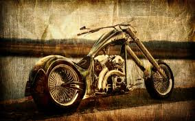
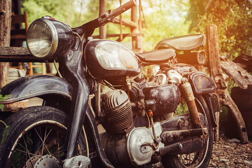

Explore the elegance of a bygone era with our stunning collection of antique motorcycles.
Step into History
Each antique bike tells a unique story, encapsulating the craftsmanship and innovation of a different time.

Rediscover Nostalgia
Experience the Extraordinary
Whether you're a connoisseur of history or simply captivated by beauty, our antique motorcycles offer an extraordinary experience.
"Engines of Elegance: Your Passage to Our Motorcycle Showcase"
Timeless Beauty
Prepare to be mesmerized by the sheer beauty of these vintage gems.
Every curve, every detail, and every line on these motorbikes is a work of art.
The exquisite designs evoke a sense of nostalgia, reminding us of a time when riding was not just a mode of transport, but a way of life.
